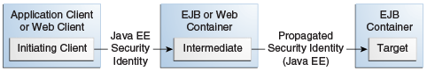

@DeclareRoles("BusinessAdmin")
public class Calculator {
...
}
|
Plataforma Java, Edición Empresarial (Java EE) 8 El Tutorial de Java EE |
| Anterior | Siguiente | Contenidos |
Los enterprise beans son componentes Java EE que implementan la tecnología EJB. Los enterprise beans se ejecutan en el contenedor EJB, un entorno de tiempo de ejecución dentro del servidor GlassFish. Aunque transparente para el desarrollador de aplicaciones, el contenedor EJB proporciona servicios a nivel de sistema, como transacciones y seguridad para sus enterprise beans, que forman el núcleo de las aplicaciones Java EE transaccionales.
Los métodos de un enterprise bean se pueden proteger de cualquiera de las siguientes maneras.
Seguridad declarativa (preferida): expresa los requisitos de seguridad de un componente de la aplicación utilizando descriptores de implementación o anotaciones. La presencia de una anotación en el método de negocio de una clase de enterprise bean que especifica los permisos del método es todo lo que se necesita para la protección y autenticación del método en algunas situaciones. En esta sección se analiza este método simple y eficiente de proteger los enterprise beans.
Debido a algunas limitaciones del método simplificado de protección de los enterprise beans, querrá continuar usando el descriptor de implementación para especificar información de seguridad en algunos casos. Se debe configurar un mecanismo de autenticación en el servidor para que funcione la solución simple. La autenticación básica es el método de autenticación predeterminado del servidor GlassFish.
Este tutorial explica cómo invocar la autenticación de nombre de usuario/contraseña de usuarios autorizados decorando los métodos de negocio de la aplicación empresarial con anotaciones que especifican los permisos de los métodos.
Para facilitar la tarea del implementador, el desarrollador de aplicaciones puede definir roles de seguridad. Un rol de seguridad es una agrupación de permisos que un determinado tipo de usuario de la aplicación debe tener para poder usar la aplicación correctamente. Por ejemplo, en una aplicación de nómina, algunos usuarios querrán ver su propia información de nómina (empleado), algunos necesitarán ver la información de nómina de otros (gerente) y algunos necesitarán poder cambiar la información de nómina de otros (payrollDept). El desarrollador de la aplicación determinaría los usuarios potenciales de la aplicación y qué métodos serían accesibles para qué usuarios. El desarrollador de la aplicación luego decoraría las clases o los métodos del enterprise bean con anotaciones que especifican los tipos de usuarios autorizados para acceder a esos métodos. El uso de anotaciones para especificar usuarios autorizados se describe en Especificación de Usuarios Autorizados mediante la Declaración de Roles de Seguridad .
Cuando una de las anotaciones se usa para definir permisos de métodos, el sistema de implementación requerirá automáticamente autenticación con nombre de usuario/contraseña. En este tipo de autenticación, se solicita al usuario que ingrese un nombre de usuario y una contraseña, que se compararán con una base de datos de usuarios conocidos. Si se encuentra que el usuario y la contraseña coincide, las funciones asignadas al usuario se compararán con las funciones autorizadas para acceder al método. Si el usuario está autenticado y se determina que tiene un rol autorizado para acceder a ese método, los datos se devolverán al usuario.
El uso de seguridad declarativa se trata en Protección de un Enterprise Bean mediante Seguridad Declarativa .
Seguridad programática: para un enterprise bean, código incrustado en un método de negocio que se usa para acceder a la identidad de una persona que llama mediante programación y que usa esta información para tomar decisiones de seguridad. La seguridad programática es útil cuando la seguridad declarativa por sí sola no es suficiente para expresar el modelo de seguridad de una aplicación.
En general, el contenedor debe hacer cumplir la administración de seguridad de una manera que sea transparente para los métodos de negocio de los enterprise beans. Las IPA de seguridad programática descritas en este capítulo deben usarse solo en las situaciones menos frecuentes en las que los métodos de negocio del enterprise bean necesitan acceder a la información del contexto de seguridad, como cuando desea otorgar acceso en función de la hora del día u otros métodos no triviales como las verificaciones de condición para un rol en particular.
La seguridad programática se trata en Protección de un Enterprise Bean mediante Programación.
Parte del material de este capítulo supone que ya ha leído Capítulo 35, "Enterprise Beans", Capítulo 36, "Introducción a los Enterprise Beans", y Capítulo 50, "Introducción a la Seguridad en la Plataforma Java EE" .
Esta sección trata sobre la protección de una aplicación Java EE en la que uno o más módulos, como los archivos EJB JAR, se empaquetan en un archivo EAR, el archivo de almacenamiento que contiene la aplicación. Las anotaciones de seguridad se utilizarán en los archivos de clases de programación Java para especificar los usuarios autorizados y la autenticación básica o de nombre de usuario/contraseña.
Los enterprise beans a menudo proporcionan la lógica de negocio de una aplicación web.
En estos casos, empaquetar el enterprise bean dentro del módulo WAR de la aplicación web
simplifica la implementación y la organización de la aplicación. Los enterprise beans
se pueden empaquetar dentro de un módulo WAR como archivos de clase Java o dentro de un
archivo JAR que se empaqueta dentro del módulo WAR. Cuando una página de servlet o
JavaServer Faces maneja el front-end web y la aplicación se empaqueta en un módulo WAR
como un archivo de clase Java, la seguridad de la aplicación se puede manejar en el
archivo web.xml de la aplicación. El EJB en el archivo WAR puede tener su
propio descriptor de implementación, ejb-jar.xml, si es necesario. La
protección de aplicaciones web mediante web.xml se analiza en el
Capítulo 51, "Introducción a la Protección de Aplicaciones Web"
.
Las secciones siguientes describen los mecanismos de seguridad declarativos y programáticos que se pueden utilizar para proteger los recursos de un Enterprise Bean. Los recursos protegidos incluyen métodos de enterprise beans que se llaman desde aplicaciones clientes, componentes web u otros enterprise beans.
Para obtener más información sobre este tema, lea la especificación
Enterprise JavaBeans 3.2. Este documento se puede descargar desde
http://jcp.org/en/jsr/detail?id=345. El Capítulo 12 de esta especificación,
"Gestión de seguridad", analiza la gestión de seguridad para enterprise beans.
La seguridad declarativa permite al desarrollador de la aplicación especificar qué usuarios están autorizados para acceder a qué métodos de los enterprise beans y autenticar a estos usuarios con autenticación básica o de nombre de usuario/contraseña. Con frecuencia, la persona que desarrolla una aplicación empresarial no es la misma persona responsable de implementar la aplicación. Un desarrollador de aplicaciones que usa seguridad declarativa para definir permisos de métodos y mecanismos de autenticación pasa al implementador una vista de seguridad de los beans empresariales contenidos en el JAR de EJB. Cuando se pasa una vista de seguridad al implementador, él o ella usa esta información para definir los permisos de método para los roles de seguridad. Si no define una vista de seguridad, el implementador tendrá que determinar qué hace cada método empresarial para determinar qué usuarios están autorizados a llamar a cada método.
Una vista de seguridad consta de un conjunto de roles de seguridad, una agrupación semántica de permisos que debe tener un determinado tipo de usuarios de una aplicación para acceder correctamente a la aplicación. Los roles de seguridad están destinados a ser roles lógicos, que representan un tipo de usuario. Puede definir permisos de método para cada rol de seguridad. Un permiso de método es un permiso para invocar un grupo específico de métodos de la interfaz de negocio, la interfaz de inicio, la interfaz de componente y/o los puntos finales de servicios web de un enterprise bean. Una vez definidos los permisos del método, se utilizará la autenticación de nombre de usuario/contraseña para verificar la identidad del usuario.
Es importante tener en cuenta que los roles de seguridad se utilizan para definir la
vista de seguridad lógica de una aplicación. No deben confundirse con los grupos de
usuarios, usuarios, principales y otros conceptos que existen en el servidor
GlassFish. Se requiere un paso adicional para asignar los roles definidos en la
aplicación a usuarios, grupos y principales que son los componentes de la base de
datos de usuarios en el dominio file del servidor GlassFish. Estos pasos
se describen en
Asignación de roles a usuarios y grupos.
Las siguientes secciones muestran cómo un desarrollador de aplicaciones usa la seguridad declarativa para proteger una aplicación o para crear una vista de seguridad para pasar al implementador.
Esta sección explica cómo usar anotaciones para especificar los permisos de método
para los métodos de una clase de bean. Para obtener más información sobre estas
anotaciones, consulte las Anotaciones comunes para la especificación Plataforma Java
en http://jcp.org/en/jsr/detail?id=250.
Los permisos de método se pueden especificar en la clase, los métodos de negocio de la clase o ambos. Los permisos de método se pueden especificar en un método de la clase de bean para anular el valor de permisos de método especificado en toda la clase de bean. Las siguientes anotaciones se utilizan para especificar permisos de métodos.
@DeclareRoles: especifica todos los roles que usará la aplicación,
incluidos los roles que no se nombran específicamente en una anotación
@RolesAllowed. El conjunto de roles de seguridad que utiliza la
aplicación es el total de los roles de seguridad definidos en las anotaciones
@DeclareRoles y @RolesAllowed.
La anotación @DeclareRoles se especifica en una clase de bean,
donde sirve para declarar roles que se pueden probar (por ejemplo, llamando a
isCallerInRole) desde dentro de los métodos de la clase anotada.
Al declarar el nombre de un rol utilizado como parámetro para el método
isCallerInRole(String roleName), el nombre declarado debe ser el
mismo que el valor del parámetro.
El siguiente código de ejemplo demuestra el uso de la anotación
@DeclareRoles:
@DeclareRoles("BusinessAdmin")
public class Calculator {
...
}
La sintaxis para declarar más de un rol es como se muestra en el siguiente ejemplo:
@DeclareRoles({"Administrator", "Manager", "Employee"})
@RolesAllowed("_list-of-roles_"): especifica los roles de seguridad
autorizados para acceder a métodos en una aplicación. Esta anotación se puede
especificar en una clase o en uno o más métodos. Cuando se especifica a nivel de
clase, la anotación se aplica a todos los métodos de la clase. Cuando se
especifica en un método, la anotación se aplica solo a ese método y anula
cualquier valor especificado en el nivel de clase.
Para especificar que ningún rol tiene autorización para acceder a métodos en
una aplicación, use la anotación @DenyAll. Para especificar que
un usuario en cualquier rol está autorizado para acceder a la aplicación, use
la anotación @PermitAll.
Cuando se usa junto con la anotación @DeclareRoles, la aplicación
usa el conjunto combinado de roles de seguridad.
El siguiente código de ejemplo demuestra el uso de la anotación
@RolesAllowed:
@DeclareRoles({"Administrator", "Manager", "Employee"})
public class Calculator {
@RolesAllowed("Administrator")
public void setNewRate(int rate) {
...
}
}
@PermitAll: especifica que todos los roles de seguridad pueden
ejecutar el método o métodos especificados. El usuario no se compara con una
base de datos para garantizar que esté autorizado para acceder a esta
aplicación.
Esta anotación se puede especificar en una clase o en uno o más métodos. Especificar esta anotación en la clase significa que se aplica a todos los métodos de la clase. Especificarlo a nivel de método significa que se aplica solo a ese método.
El siguiente código de ejemplo demuestra el uso de la anotación
@PermitAll:
import javax.annotation.security.*;
@RolesAllowed("RestrictedUsers")
public class Calculator {
@RolesAllowed("Administrator")
public void setNewRate(int rate) {
//...
}
@PermitAll
public long convertCurrency(long amount) {
//...
}
}
@DenyAll: especifica que no se permite que ningún rol de seguridad
ejecute el método o los métodos especificados. Esto significa que estos métodos
están excluidos de la ejecución en el contenedor Java EE.
El siguiente código de ejemplo demuestra el uso de la anotación
@DenyAll:
import javax.annotation.security.*;
@RolesAllowed("Users")
public class Calculator {
@RolesAllowed("Administrator")
public void setNewRate(int rate) {
//...
}
@DenyAll
public long convertCurrency(long amount) {
//...
}
}
El siguiente fragmento de código demuestra el uso de la anotación
@DeclareRoles con el método isCallerInRole. En este
ejemplo, la anotación @DeclareRoles declara un rol que utiliza el
enterprise bean PayrollBean para realizar la comprobación de seguridad
utilizando isCallerInRole("payroll") para verificar que la persona que
llama está autorizada para cambiar los datos del salario:
@DeclareRoles("payroll")
@Stateless public class PayrollBean implements Payroll {
@Resource SessionContext ctx;
public void updateEmployeeInfo(EmplInfo info) {
oldInfo = ... read from database;
// The salary field can be changed only by callers
// who have the security role "payroll"
Principal callerPrincipal = ctx.getCallerPrincipal();
if (info.salary != oldInfo.salary && !ctx.isCallerInRole("payroll")) {
throw new SecurityException(...);
}
...
}
...
}
El siguiente código de ejemplo ilustra el uso de la anotación
@RolesAllowed:
@RolesAllowed("admin")
public class SomeClass {
public void aMethod () {...}
public void bMethod () {...}
...
}
@Stateless public class MyBean extends SomeClass implements A {
@RolesAllowed("HR")
public void aMethod () {...}
public void cMethod () {...}
...
}
En este ejemplo, suponiendo que aMethod, bMethod y
cMethod son métodos de la interfaz de negocio A, los
permisos del método los valores de los métodos aMethod y
bMethod son @RolesAllowed("HR") y
@RolesAllowed("admin") , respectivamente. No se han especificado los
permisos de método para el método cMethod.
Para aclarar, las anotaciones no son heredadas por la propia subclase. En cambio, las anotaciones se aplican a los métodos de la superclase que son heredados por la subclase.
Cuando se especifican permisos de método, el servidor GlassFish invocará la autenticación básica de nombre de usuario/contraseña.
Para usar un tipo diferente de autenticación o para requerir una conexión segura usando SSL, especifique esta información en un descriptor de implementación de la aplicación.
La seguridad programática, el código que está incrustado en un método comercial, se usa para acceder a la identidad de una persona que llama mediante programación y usa esta información para tomar decisiones de seguridad dentro del método mismo.
Aquí se tratan los siguientes temas:
En general, el contenedor debe aplicar la administración de la seguridad de manera que sea transparente para los métodos de negocio del enterprise bean. La IPA de seguridad descrita en esta sección debe usarse solo en las situaciones menos frecuentes en las que los métodos de negocio del enterprise bean necesitan acceder a la información del contexto de seguridad, como cuando desea restringir el acceso a una hora particular del día.
La interfaz javax.ejb.EJBContext proporciona dos métodos que permiten
que el proveedor del bean acceda a la información de seguridad sobre la persona que
llama al enterprise bean.
getCallerPrincipal permite que los métodos del enterprise bean
obtengan el nombre del principal de la persona que llama actual. Los métodos
podrían, por ejemplo, usar el nombre como clave para la información en una base
de datos.
El siguiente ejemplo de código ilustra el uso del método
getCallerPrincipal:
@Stateless public class EmployeeServiceBean implements EmployeeService {
@Resource SessionContext ctx;
@PersistenceContext EntityManager em;
public void changePhoneNumber(...) {
...
// obtain the caller principal
callerPrincipal = ctx.getCallerPrincipal();
// obtain the caller principal's name
callerKey = callerPrincipal.getName();
// use callerKey as primary key to find EmployeeRecord
EmployeeRecord myEmployeeRecord =
em.find(EmployeeRecord.class, callerKey);
// update phone number
myEmployeeRecord.setPhoneNumber(...);
...
}
}
En este ejemplo, el enterprise bean obtiene el nombre principal del llamante
actual y lo utiliza como clave principal para ubicar una entidad
EmployeeRecord. Este ejemplo asume que la aplicación se
implementó de tal manera que el principal de la persona que llama actual
contiene la clave principal utilizada para la identificación de los empleados
(por ejemplo, el número de empleado).
isCallerInRole permite al desarrollador codificar las
comprobaciones de seguridad que no se pueden definir fácilmente mediante
permisos de método. Tal verificación podría imponer un límite basado en roles en
una solicitud, o podría depender de la información almacenada en la base de
datos.
El código del enterprise bean puede utilizar el método
isCallerInRole para comprobar si el llamante actual se ha
asignado a un rol de seguridad determinado. Los roles de seguridad los define
el proveedor de beans o el ensamblador de aplicaciones y el implementador los
asigna a los principales o grupos de principales que existen en el entorno
operativo.
El siguiente ejemplo de código ilustra el uso del método
isCallerInRole:
@Stateless public class PayrollBean implements Payroll {
@Resource SessionContext ctx;
public void updateEmployeeInfo(EmplInfo info) {
oldInfo = ... read from database;
// The salary field can be changed only by callers
// who have the security role "payroll"
if (info.salary != oldInfo.salary &&
!ctx.isCallerInRole("payroll")) {
throw new SecurityException(...);
}
...
}
...
}
Usaría la seguridad programática de esta manera para controlar dinámicamente el
acceso a un método, por ejemplo, cuando desea denegar el acceso, excepto durante un
momento particular del día. Un ejemplo de aplicación que utiliza los métodos
getCallerPrincipal y isCallerInRole se describe en
El ejemplo converter-secure: Asegurar un Enterprise Bean con Seguridad
Programática
.
Puede especificar si se debe usar la identidad de seguridad de una persona que llama para la ejecución de métodos específicos de un enterprise bean o si se debe usar una identidad de ejecución específica. La Figura 52-1 ilustra este concepto.

En esta ilustración, un cliente de aplicación realiza una llamada a un método de enterprise bean en un contenedor EJB. Este método de enterprise bean, a su vez, realiza una llamada a un método de enterprise bean en otro contenedor. La identidad de seguridad durante la primera llamada es la identidad de la persona que llama. La identidad de seguridad durante la segunda llamada puede ser cualquiera de las siguientes opciones.
De forma predeterminada, la identidad del autor de la llamada del componente intermedio se propaga al enterprise bean de destino. Esta técnica se utiliza cuando el contenedor de destino confía en el contenedor intermedio.
Se propaga una identidad específica al enterprise bean de destino. Esta técnica se utiliza cuando el contenedor de destino espera acceso mediante una identidad específica.
Para propagar una identidad al enterprise bean objetivo, configure una identidad run-as para el bean, como se describe en Configuración de la Identidad de Seguridad Propagada de un Componente . Establecer una identidad de ejecución para un enterprise bean no afecta a las identidades de sus llamadores, que son las identidades probadas para obtener permiso para acceder a los métodos del enterprise bean. La identidad de ejecución establece la identidad que utilizará el enterprise bean cuando realice llamadas.
La identidad de ejecución se aplica al enterprise bean como un todo, incluidos todos los métodos de la interfaz empresarial del enterprise bean, las interfaces locales y remotas, la interfaz de componentes y las interfaces de punto final del servicio web, los métodos de escucha de mensajes de un bean controlado por mensajes, el método de tiempo de espera de un enterprise bean y todos los métodos internos del bean que podrían llamarse a su vez.
Puede configurar la identidad de seguridad de ejecución o propagación de un
enterprise bean utilizando la anotación @RunAs, que define el rol de la
aplicación durante la ejecución en un contenedor Java EE. La anotación se puede
especificar en una clase, lo que permite a los desarrolladores ejecutar una
aplicación bajo un rol particular. El rol debe asignarse a la información de
usuario/grupo en el dominio de seguridad del contenedor. La anotación
@RunAs especifica el nombre de un rol de seguridad como su parámetro.
El siguiente código demuestra el uso de la anotación @RunAs:
@RunAs("Admin")
public class Calculator {
//....
}
Tendrá que asignar el nombre de la función ejecutar como a una entidad principal determinada definida en el servidor GlassFish si las funciones dadas están asociadas con más de una entidad principal de usuario.
Cuando se diseña un enterprise bean de modo que se utilice la identidad del autor de la llamada original o una identidad designada para llamar a un bean de destino, el bean de destino recibirá únicamente la identidad propagada. El bean de destino no recibirá ningún dato de autenticación.
No hay forma de que el contenedor de destino autentique la identidad de seguridad
propagada. Sin embargo, debido a que la identidad de seguridad se usa en
comprobaciones de autorización (por ejemplo, permisos de métodos o con el método
isCallerInRole), es de vital importancia que la identidad de seguridad
sea auténtica. Debido a que no hay datos de autenticación disponibles para
autenticar la identidad propagada, el destino debe confiar en que el contenedor que
llama ha propagado una identidad de seguridad autenticada.
De forma predeterminada, el servidor GlassFish está configurado para confiar en las identidades que se propagan desde diferentes contenedores. Por lo tanto, no necesita realizar ningún paso especial para establecer una relación de confianza.
El implementador es responsable de garantizar que una aplicación ensamblada sea segura después de que se haya implementado en el entorno operativo de destino. Si se ha proporcionado una vista de seguridad al implementador mediante el uso de anotaciones de seguridad y/o un descriptor de implementación, la vista de seguridad se asigna a los mecanismos y políticas utilizados por el dominio de seguridad en el entorno operativo de destino, que en este caso es el servidor GlassFish. Si no se proporciona una vista de seguridad, el implementador debe configurar la política de seguridad adecuada para la aplicación de enterprise bean.
La información de implementación es específica de un servidor web o de aplicaciones.
| Anterior | Siguiente | Contenidos |